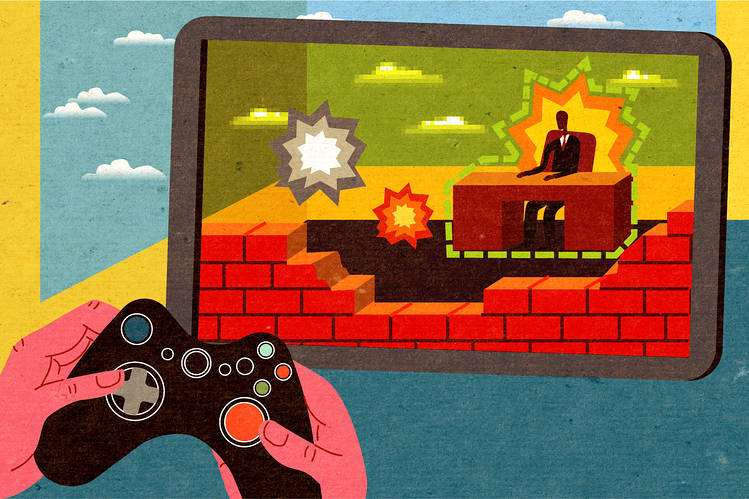

Video Games
By Krish
History of Video Games
The first video games emerged in the 1950s and 60s, evolving from research projects on mainframe computers to simple, interactive experiences on early video displays. By the 1970s, the first arcade games like Pong and the Magnavox Odyssey home console marked the beginning of the commercial video game industry.
Video Games Today
Video games are electronic games played using various controllers, encompassing genres like action, sports, puzzles, and simulations. They have grown into a multibillion-dollar industry with sophisticated gameplay and cultural influence. Playable on consoles, PCs, and mobile devices, they are accessible to a wide audience.
